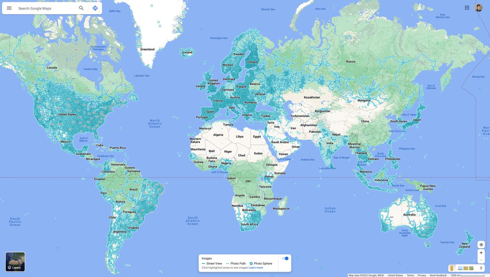
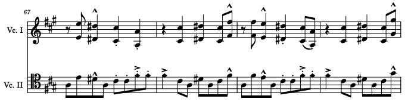
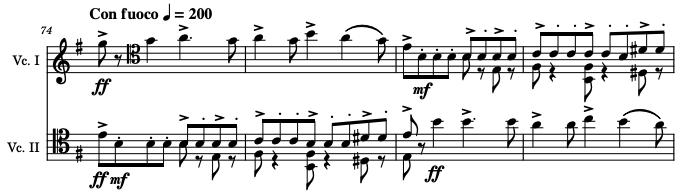
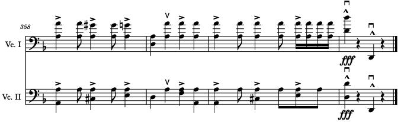
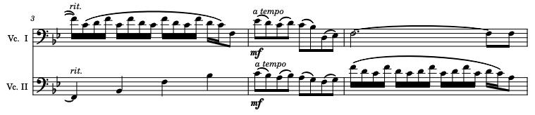
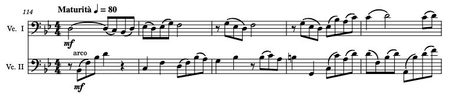
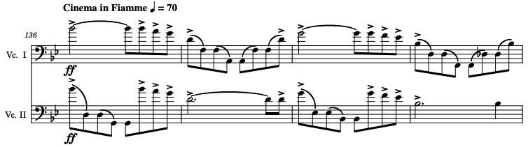
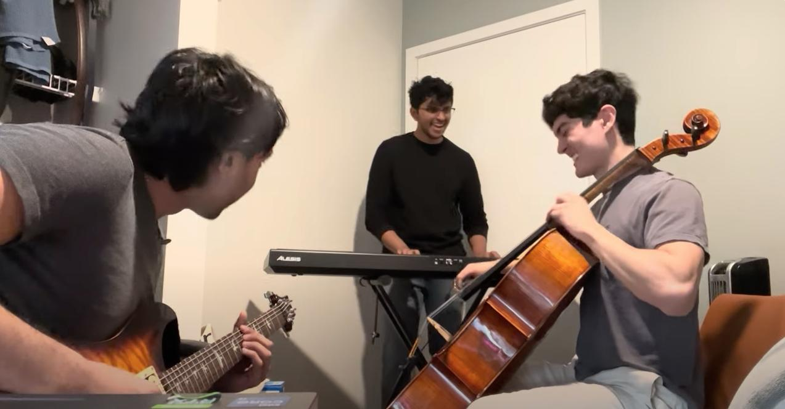

I am an incoming PhD student at the UC Berkeley interested in topics in theoretical computer science including
the design and analysis of randomized/approximation algorithms, optimization, spectral graph theory, and numerical linear algebra.
I graduated from the University of Washington in June 2024 with a Bachelor's degree in computer science
and mathematics. During my undergrad, I gained research and project experience across several
fields including optimal control, machine learning, computational biology, and mechanical engineering.
Outside of school, my main hobby is playing the cello, but I also enjoy playing other instruments
(piano and guitar), music composition, calisthenics, skiing, painting, drawing, and origami.
Sep 2024 - Dec 2024
Abstract
Given an initial point $x_0 \in \mathbb{R}^d$ and a sequence of vectors $v_1, v_2, \dots$ in $\mathbb{R}^d$,
we define a greedy sequence by setting $x_{n} = x_{n-1} \pm v_n$ where the sign is chosen so as to minimize $\|x_n\|$.
We prove that if the vectors $v_i$ are chosen uniformly at random from $\mathbb{S}^{d-1}$ then elements of the sequence
are, on average, approximately distance $\|x_n\| \sim \sqrt{\pi d/8}$ from the origin. We show that the sequence
$(\|x_n\|)_{n=1}^{\infty}$ has an invariant measure $\pi_d$ depending only on $d$ and we determine its mean and
study its decay for all $d$. We also investigate a completely deterministic example in $d=2$ where the $v_n$
are derived from the van der Corput sequence. Several additional examples are considered.
Joint work with Alex Albors, François Clément, Braeden Sodt, Ding Yifan, and Tony Zeng.
Completed as part of the Washington Experimental Mathematics Laboratory under the supervision of Dr. Stefan Steinerberger.
Under revision at Involve 2025 (a mathematics journal).
Links
- Publication: https://arxiv.org/abs/2412.04284
Jun 2024 - Nov 2024
Abstract
Lossless Convexification (LCvx) is a clever trick that transforms a class of nonconvex optimal control problems
(where the nonconvexity arises from a lower bound on the control norm) into equivalent convex problems via convex
relaxations, the goal being to solve these problems efficiently via polynomial-time numerical solvers. However,
to solve these infinite-dimensional problems in practice, they must first be converted into finite-dimensional
problems, and it remains an open area of research to ensure the theoretical guarantees of LCvx are maintained
across this discretization step. Prior work has proven guarantees for zero-order hold control parameterization.
In this work, we extend these results to the more general, and practically useful, first-order hold control
parameterization. We first show that under mild assumptions, we are guaranteed a solution that violates our
nonconvex constraint at no more than $n_x + 1$ vertices in our discretized trajectory (where $n_x$ is the dimension
of our state-space). Then, we discuss an algorithm that, for a specific case of problems, finds a solution where
our nonconvex constraint is violated along no more than $2n_x + 2$ edges in at most
$\lceil \log_2 ((\rho_{\max} - \rho_{\min}) / \varepsilon_\rho) \rceil + 1$
calls to our solver (where $[\rho_{\min}, \rho_{\max}]$ represent the bounds on our control norm and
$\varepsilon_\rho$ is some desired suboptimality tolerance). Finally, we provide numerical results
demonstrating the effectiveness of our proposed method.
Completed as part of the University of Washington Autonomous Controls Laboratory under the supervision of Dr. Behçet Açıkmeşe.
Planned submission to IEEE Conference on Decision and Control 2025.
Links
- Code: https://github.com/shokiami/trajopt
- Publication: https://arxiv.org/abs/2411.18004
Sep 2024 - Dec 2024
Abstract
My initial work at UW Formula Motorsports was developing autonomous driving software on the driverless sub-team.
While the rest of the team works to build a formula race car from scratch, the goal of driverless is to modify
the car to autonomously compete in a ten-lap autocross event.
Since we are not given the layout of the course prior to competing, the main challenge with driverless is the
first lap logic (during which an optimal path would be mapped out and then spammed for the remaining nine laps).
My main project was leading the development of planning/control algorithms for completing this first lap
as fast as possible, resulting in the team's first-ever successful autonomous lap completion in simulation.
Links
- Driverless Code: https://github.com/uwfsae/driverless
- Algorithm Testing: https://github.com/shokiami/fsae_sim
Software & Tools
- Language: C++, Python
- Robotics Library: ROS
- Simulation: Unreal Engine
- GUI Library: PyGame
- Util Libraries: NumPy
Algorithms
The goal of the first-lap algorithm was to map from a set of detected nearby cones to a set of control values
(steering, throttle, brake) that would lead to optimal driving.
My friend Jaspern Geldenbott and I explored various first-lap algorithms, but the one we found that was
the most promising was pure pursuit. The idea behind pure pursuit is to try to follow some reference
point that keeps moving along a target path (like following a carrot on a stick) ultimately resulting
in the car following the path.
A car trying to follow a reference point moving along the path will inevitably lead to the car following the path.
There are many ways to choose this reference point, but the easiest way is to first pick the cones on the left and right
that are both in front of the car and furthest away and then take the average of the two positions. For additional speed,
we ended up performing a weighted average to favor staying on the inside of turns. I realized that since the
cones are paired up across the track, the cones on the inside of the turn end up closer together, allowing us to
use the minimum pairwise distance between cones to determine which side to favor.
Once a reference point is chosen, it turns out that there exists a closed-form solution for the
desired steering angle. Simplifying the car's dynamics to a bicycle model, we get the following result:
Steering angle calculations.
Finally, given the final steering angle, we can calculate a maximal target speed that doesn't introduce
wheel slip and use PID controlling to extract throttle and brake values.
Here is the high-level pseudocode for the first-lap algorithm:
get_controls(nearby_cones):
left_cones, right_cones = nearby_cones
left_target = get_target(left_cones)
right_target = get_target(right_cones)
left_target, right_target = pad_targets(left_target, right_target, CAR_WIDTH)
left_min_dist = min_pairwise_dist(left_cones)
right_min_dist = min_pairwise_dist(right_cones)
p = get_weight(left_min_dist, right_min_dist)
ref = p * left_target + (1 - p) * right_target
steering = pure_pursuit(ref)
target_speed = get_target_speed(steering)
throttle, brake = pid(target_speed)
return (steering, throttle, brake)
get_target(cones):
target_cone = (0, 0)
for cone in cones:
if cone.x > 0 and ||cone|| > ||target_cone||:
target_cone = cone
rturn target_cone
pure_pursuit(ref):
turn_radius = (ref.x^2 + ref.y^2) / (2 * ref.y)
steering = arctan(CAR_LENGTH / turn_radius)
return steering
Results
Here are the results of the first-lap algorithm:
Algorithm working in a PyGame simulation with four visualizations:
no effects, only detected cones, detected cones + reference point, only detected cones + reference point.
Algorithm working in Unreal Engine with real-world physics.
Hardware
I also designed and manufactured the team's first driverless steering system
(motor + custom rank and pinion).
CAD design.
Ansys simulation.
Final assembly and integration.
May 2021 - Jul 2023
Abstract
DanceTime is a multiplayer dance-based rhythm game inspired by Just Dance and FaceTime. In DanceTime,
each player must try to follow the dance moves of the avatar, and the closer you are, the more points you get.
This ended up being a rather involved project, featuring a custom 30 Hz pose estimation library and an original
regression-based scoring algorithm.
My friend Tim Erwin and I playing DanceTime.
Links
Software & Tools
- Language: C++
- CV Library: OpenCV
- ML Frameworks: MediaPipe, TensorFlow Lite
System Overview
Algorithms
One algorithm I wanted to highlight was the scoring algorithm which solves a simple yet non-trivial problem:
Define a pose to be a set of (x, y) coordinates for various key joints/body parts. Given a constant stream
of noisy pose readings, how can we arrive at a score that captures how similarly the two players danced?
There were three main nuances that made this problem challenging:
- Invariance: translation/scaling should not affect scoring.
- Noise: the pose data can be very jittery/sporadic.
- Timing offset: scoring cannot fixate on current poses and must account for timing offsets.
Invariance was the easiest problem to address. I tried various strategies such as comparing joint velocities and
joint angles, but both of these failed due to the noise. What worked best was standardizing each pose such that
the torso had unit length and was centered at the origin.
Noise was the hardest problem to combat. The first natural step was to use a moving average, but this ended
up either not making a significant enough impact or over-dampening the overall shape of the data.
Example left wrist x coordinate vs. time data standardized to [-1, 1].
So instead, I came up with a two-part solution. The first part is a conditional moving average which only
averages if a current point is further from its neighbors than they are to each other (these points are
defined to be outliers). This does a better job of preserving the shape of the data.
Outliers set to the average of their neighbors and marked with an "X".
The second part is using regression to find the polynomial of best fit for the data. The intuition is that this would help
capture the player's overall trajectory and significantly reduce the effect of any remaining noise in our data.
After lots of experimentation, I found that a polynomial degree of 3 provided the best results without overfitting.
A cubic polynomial is fitted to the data using regression.
Using polynomial regression actually serves a second purpose in helping address the timing offset issue by
transforming our problem to continuous space, making it easy to find the horizontal translation that
minimizes the error.
I ended up using maximum error instead of mean error since it is a more accurate measure of alignment.
Finally, we can take the error and offset and feed them into some activation function such as a sigmoid
to get a similarity score between 0 and 1.
The red and blue functions are identical cubic functions that are vertically offset and the green function
and orange function are the mean and max error respectively over the interval [-1, 1]. Note that the max error
is minimized at offset zero which is desired.
Here is the full pseudocode for the entire scoring algorithm:
score(player_poses, avatar_poses):
remove_outliers(player_poses)
remove_outliers(player_poses)
standardize(player_poses)
standardize(avatar_poses)
player_polys = poly_regression(player_poses)
avatar_polys = poly_regression(avatar_poses)
min_error = infinity
for t from T_MIN to T_MAX with T_STEP:
error = max_error(player_polys.translate(t), avatar_polys)
if error < min_error:
min_error = error
offset = |t|
score = sigmoid(min_error + OFFSET_COST * offset)
return score
remove_outliers(poses):
for pose in poses:
for body_part in pose:
prev_to_curr = dist(prev_body_part, body_part)
curr_to_next = dist(body_part, next_body_part)
pev_to_next = dist(prev_body_part, next_body_part)
if prev_to_next < prev_to_curr or prev_to_next < curr_to_next:
body_part = (prev_body_part + next_body_part) / 2
standardize(poses):
for pose in poses:
left_shoulder = pose[left_shoulder]
right_shoulder = pose[right_shoulder]
left_hip = pose[left_hip]
right_hip = pose[right_hip]
torso_center = (left_shoulder + left_hip + right_shoulder + right_hip) / 4
left_torso_length = dist(left_shoulder, left_hip)
right_torso_length = dist(right_shoulder, right hip)
torso_length = (left_torso_length + right_torso_length) / 2
for body_part in pose:
body_part = (body_part - torso_center) / left_torso_length
poly_regression(poses):
polys = {}
for body_part in body_parts:
A = matrix(poses.length, POLY_DEGREE + 1)
b = vector(poses.length)
for i from 0 to poses.length - 1:
A[i] = [1, i, i^2, ..., i^POLY_DEGREE]
b[i] = poses[i][body_part]
P = A * (A^T * A)^-1 * A^T
proj_b = P * b
poly_coeffs = A^-1 * proj_b
polys[body_part] = poly_coeffs
return polys
max_error(player_polys, avatar_polys):
max_error = -infinity
for body_part in body_parts:
for t from T_START to T_END with T_STEP:
f = player_polys[body_part]
g = avatar_polys[body_part]
error = (f(t) - g(t))^2
if error > max_error:
max_error = error
return max_error
Jun 2022 - Jul 2023
Abstract
AlphaFour is a Connect 4 AI that learns how to play from scratch via self-play deep reinforcement learning.
After 20 generations (~9 hours of training), AlphaFour is able to play at ~90% optimality.
Furthermore, since the only input to the algorithm is the rules of the game, AlphaFour can even generalize to
other board games.
As suggested by the name, AlphaFour is heavily inspired by DeepMind's AlphaZero.
Links
Software & Tools
- Language: Python
- ML Library: PyTorch
- GUI Library: PyGame
- Util Libraries: NumPy, Matplotlib
Training
AlphaFour, like AlphaZero, is based on an algorithm called Monte Carlo Tree Search (MCTS) which is a heuristic
search algorithm for playing board games.
The idea behind MCTS is that you gradually build up a game state tree by repeating the following actions:
selection, expansion, simulation, backpropagation.
AlphaFour's modifications to MCTS (adjusted UCB formula, Dirichlet noise at root, and deep neural network
instead of simulation).
During selection, we recurse along the tree until we reach some leaf node. Children are selected based on
their upper confidence bound (UCB) score which is a function of the child's average state value (encourage exploitation)
and inverse visit count (encourage exploration).
We then expand this leaf node by taking a valid action from the game state, giving us a new unexplored game state.
During simulation, we perform random game roll-outs from this state to estimate its value.
This value is then backpropagated up the tree to update the value of each ancestral node.
AlphaFour works by making a few key modifications to MCTS. The main difference is the use of a deep neural network
that takes in a given state and outputs a policy (probabilities over actions) and a value
(a scalar from -1.0 to 1.0).
AlphaFour's model consisted of a deep residual network of 8 res blocks with 128 channels whose output
is fed into a policy network and a value network.
AlphaFour uses its value network instead of random roll-outs to predict state values and uses its policy network
(and updated UCB formula) to predict child priors and guide exploration.
The idea is that MCTS can already play the game of Connect 4 at a basic level, and so MCTS helps the policy/value
networks learn, which in turn improves the effectiveness of MCTS, and so on.
Finally, there are a couple of other minor modifications such as adding Dirichlet noise to the policy at the
root node when choosing actions to encourage exploration and prevent MCTS from becoming deterministic
and repeating games.
An example training session where at generation 24 the model kept repeating the same games
and thus was able to overfit to those games and reach a loss of zero.
The algorithms in AlphaFour are parallelized, but for ease of comprehension, here are the summarized sequential versions:
learn():
repeat NUM_GENS:
examples = []
repeat GAMES_PER_GEN:
examples += self_play()
repeat EPOCHS_PER_GEN:
train(examples)
self_play():
examples = []
state = init_state()
player = 1
while True:
input_state = player * state
policy, value = monte_carlo_tree_search(input_state)
action = sample_action(state, policy)
state = get_next_state(state, player, action)
examples.append([input_state, policy, 0.0])
if is_terminal(state):
reward = 1.0 if is_win(state) else 0.0
for i from 0 to examples.length - 1:
example[i][2] = reward if examples.length - 1 - i % 2 == 0 else -reward
break
player *= -1
return examples
monte_carlo_tree_search(state):
root = new_mcts_node(state)
repeat MCTS_ITRS:
node = root
while node.is_expanded():
node = node.select()
if node.is_terminal():
value = -1.0 if is_win(state) else 0.0
else:
policy, value = model(node.state)
policy += dirichlet_noise() if node == root
policy[get_invalid_actions(node.state)] = 0.0
policy /= sum(policy)
node.expand(policy)
node.backpropogate(value)
policy = root.child_visit_counts() / MCTS_ITRS
value = root.value_sum / MCTS_ITRS
Results
Here is the loss vs. epoch plot after training for 20 generations (~9 hours):
Loss vs. epoch plot (each spike corresponds to a new generation; when a new set of self-play games are
generated, the model's train loss jumps up to its test loss).
To demonstrate that AlphaFour is indeed learning, here are some example games where player one is an optimal player
and player two is AlphaFour at different training generations.
Note that Connect 4 is a solved game, so playing against an optimal player (who plays first) is impossible to
beat. Thus, the number of turns AlphaFour survives can be used as a rough metric for how well it is playing.
Generation 0 vs. Optimal Player (7 moves)

Generation 5 vs. Optimal Player (17 moves)

Generation 10 vs. Optimal Player (31 moves)

Generation 20 vs. Optimal Player (37 moves)

Checking generation 20 AlphaFour's moves against a Connect 4 solver gives us that ~90% of its moves are optimal.
Even better, it turns out that if the optimal player makes a single suboptimal move, AlphaFour can play
well enough to convert the game into a win.
In the following game, first player plays optimally except for move 5 in which it plays the third-best move.
Here, AlphaFour is able to take advantage of this mistake to win the game with an impressive 5 in a row.
Generation 20 vs. Optimal Player w/ 1 Mistake (40 moves)
Jan 2023 - Mar 2023
Abstract
Suppose you want a robotic arm that when told "put the cup on the coaster" or "put the small box in the larger box"
is able to perform the task first try. While imitation learning provides one method of training a robot to
perform manipulation tasks, since collecting real-world examples is expensive, the training data will likely
contain limited objects/scenes, preventing the robot from generalizing to novel scenarios.
GenAug was a solution proposed by PhD student Zoey Chen (a colleague from the UW WEIRD Lab) who asked me to
join her on the project. The idea behind GenAug is to use generative models such as stable diffusion
to augment the training data (replace the pick object, replace the place object, alter the scene, add distractors, etc.).
Our hope was that the large amounts of web-scraped data these generative models were trained on would serve
as a prior and thus provide more semantically meaningful augmentation than classical data augmentation
techniques (noise injection, transformations, etc.).
Sure enough, in our real-world experiments, we found that GenAug improved our robot's zero-shot success rate
by 40%, allowing our robot to perform general tabletop manipulation tasks with minimal human demonstrations.
Our results were published in a paper that was accepted to the Robotics Science and Systems conference in
June 2023 and was a Best System Paper Finalist.
Links
- Website: https://genaug.github.io
- Code: https://github.com/genaug/genaug
- Paper: https://arxiv.org/abs/2302.06671
Software & Tools
- Hardware: 6 DoF xArm5 w/ Vacuum Gripper, Intel RealSense Camera (D435i)
- Languages: Python, Bash
- Robotics Library: ROS
- Sim Library: PyBullet
- ML Library: PyTorch
- Paper: LaTeX
Data Collection
To collect human demonstrations, the user labels pick/place locations on a 2D top-down projection of the
scene point cloud. These locations are mapped back to 3D coordinates using calibrated depth maps.
Data Augmentation
We used GenAug to augment our dataset in the following ways:
Zero-Shot Deployment
After training our model on the augmented dataset, we test it on our robot on scenes it has never seen before.
Here are some examples from our testing:
Video

Nov 2022 - Dec 2022
Abstract
GeoKnowr is a lightweight GeoGuessr AI that can reliably guess within 2000 km of the ground truth.
For those who are unfamiliar, GeoGuessr
is a popular web game where users are thrown into random locations around the world in
Google Street View and are challenged to place a marker on the world map to guess where they are in the world
(the closer you guess, the more points you get).
Example screenshot from GeoGuessr (this is Japan).
My friend Zach Chapman and I wanted to use deep learning to create a GeoGuessr AI that would be able to
reliably guess the location of where such images were taken. Furthermore, GeoGuessr has several different modes,
one of which is NMPZ (no moving-panning-zooming) which is notoriously the most difficult and thus the one we wanted to tackle.
We created the entire data collection, training, and testing pipeline from scratch.
Links
Software & Tools
- Languages: Python, JavaScript, HTML, CSS
- Street View API: Google Street View
- ML Libraries: PyTorch, Scikit-learn
- Util Libraries: NumPy, Pandas, Matplotlib, WebGL
Data Collection
Our data collection pipeline could be broken up into the following steps:
- Choose a random (latitude, longitude) coordinate.
- Use Google's API's to see if any Google Street View locations exist within a 10km search radius.
- If so, grab the metadata for that location and scrape the corresponding street view image at a random heading.
- Repeat steps 1-3 until we gather enough data.
Using this method, we downloaded a total of 32,000 images with a resolution of 480x360 from around the world.
Training
Initially, we framed this as a regression problem, with the goal of minimizing surface distance around the
unit sphere because this is ultimately the criterion we are trying to minimize when playing GeoGuessr.
However, the issue with this was that our model would learn to spam Greenland. This made sense because most
of Google Street View data is in the northern hemisphere and thus our model could achieve a decent
score by average guessing.

Google Street View's coverage.
To combat this issue, we reframed the problem as classification by dividing up the globe into numerous regions.
The idea was that the model would classify an image into one of these regions and then guess the center of the region.
This forced our model to commit more, as nearby regions are equally penalized as regions on the opposite side of the world.
Another motivation behind this pivot was the recognition that humans also play GeoGuessr by region-guessing.
First, we tried dividing up the world into a uniform grid, however, the majority of these classes had little to no
examples being over water or in areas with low GSV coverage, so our model would learn to spam the majority class.
We addressed this by cleverly using clustering algorithms to perform the class divisions for us, leading to more
equal-sized classes (and less data sparsity). Note how the clusters line up with Google's coverage.
Visualization of our clusters. We found that the Gaussian mixture model worked the best and 21 classes
was the sweet spot where less classes led to regions which were too large and more classes led to too
little examples per class.
Our final performance boost came from recognizing that we did not have enough data to adequately train a
deep neural network from scratch, and so we used transfer learning on ResNet-18 pre-trained on the ImageNet
dataset. Now, our model no longer had to learn feature extraction and could instead focus on finding
the relationship between the features provided by pre-trained ResNet-18 and our classes.
Transfer learning on ResNet-18 architecture.
Throughout this entire process, we also used an abundance of deep learning techniques such as learning rate
annealing and weight decay.
Results
Here are our results after training for ~5 hours:
- 5th percentile: 361.33km (correct part of country)
- 10th percentile: 520.11km (correct country)
- 25th percentile: 980.21km (correct region)
- Median: 2839.96km (correct continent)
Examples
Here are 10 example images and corresponding guesses from our model.
The red marker represents the ground truth and the grey marker represents the AI's guess.
Eurajoki, Finland: 46.15km away
Cedar Pocket, Australia: 766.68km away
Ōdai, Japan: 554.07km away
Pervomaiskii, Russia: 750.37km away
Clavering Øer, Greenland: 3001.91km away

Nuenen, Netherlands: 728.77km away
Tanjung Mulia, Indonesia: 778.63km away
Takper, Nigeria: 860.73km away
Colonia Río Escondido, México: 26.80km away
Chipaya, Bolivia: 1133.61km away
Oct 2022 - Oct 2022
Abstract
Frijma is a web app that allows users to scan grocery receipts using their phone camera, keeps track of their
expiration dates with easily digestible visuals, and also provides recipe inspiration for efficient meal
planning—ultimately reducing food waste due to food items exceeding their expiration date.
Frijma was a submission to the 24-hour DubHacks'22 hackathon. My team consisted of me, Stefan Todoran,
Nicholas Bradley, and Zach Chapman.
Links
Software & Tools
- Languages: TypeScript, Javascript, HTML, CSS
- Food Dataset: US Department of Agriculture
- Image to Text: Tesseract.js
- Recipe API: Edamam
System Overview
User Experience
1. Suppose you go grocery shopping and return with the following receipt (I just found this online).

An example grocery receipt.
2. You can either take a photo or upload an image of the receipt.
The scan/upload button can be found at the top of the webpage.
3. Frijma provides a list of all of the groceries detected on the receipt with their expiration dates.
Frijma's list of food items and their expiration dates.
4. Frijma also provides a list of relevant recipes to help use up all of your groceries on time.
Frijma's list of recipe inspiration.
Algorithms
Although I worked on the entire pipeline, I focused on the parsing, search, and edit-distance
algorithms. The runtime of the three combined algorithms is O(mn) where m is the number of characters in the receipt
and n is the number of characters in the dataset (note that this is the optimal runtime).
Here is the pseudocode for the three algorithms:
parse(receipt):
for line in receipt:
if line satisfies regex "*XX.XX":
abbrv = line.remove(non-letters)
if abbrv == "":
continue
food, cost = search(abbrv)
if cost > MAX_COST:
continue
addToVisual(food)
queryRecipes(food)
search(abbrv):
min_cost = infinity
closest_food = null
for keywords, food in dataset:
total_cost = 0
for word in abbrv:
keyword_min_cost = infinity
for keyword in keywords:
keyword_cost = edit_distance(word, keyword)
if keyword_cost < keyword_min_cost:
keyword_min_cost = keyword_cost
total_cost += keyword_min_cost
avg_cost = total_cost / abbrv.word_count
name_cost = edit_distance(abbrv, food)
true_cost = (P * name_cost + (1 - P) * avg_cost) / abbrv.length
if true_cost < min_cost:
closest_food = food
min_cost = true_cost
return closest_food, min_cost
edit_distance(abbrv, food):
dp = zero_matrix(abbrv.length + 1, food.length + 1)
for i from 0 to abbrv.length:
for j from 0 to food.length:
if i == 0:
dp[i, j] = j * INSERTION_COST
else if j == 0:
dp[i, j] = i * DELETION_COST
else if abbrv[i - 1] == food[j - 1]:
dp[i, j] = dp[i - 1, j - 1]
else:
dp[i, j] = min(
dp[i][j - 1] + INSERTION_COST,
dp[i - 1][j] + DELETION_COST,
dp[i - 1][j - 1] + INSERTION_COST + DELETION_COST
)
return dp[abbrv.length, food.length]
Sep 2021 - Jun 2022
Abstract
In 2020, I joined the UW Makeability Lab as a software engineer, co-developing the Project Sidewalk webpage:
a gamified website where users walk around in Google Street View and label sidewalk accessibility issues for wheelchair
users and older adults. Since deployment, Project Sidewalk has been able to build a novel dataset of 1 million labels
across 8 cities.
In 2021, I joined forces with my friends Michael Duan and Logan Milandin to apply deep learning to the above dataset to
create a computer vision pipeline for automatic sidewalk evaluation. As a culmination of our work, we authored
a paper discussing the effects of filtered vs. unfiltered and single-city vs. cross-city training data and
how our models can label new cities with a promising 80-90% accuracy.
Our paper was accepted to the ASSETS conference in October 2022.
Links
- Sidewalk Webpage: https://sidewalk-sea.cs.washington.edu
- Sidewalk Webpage Code: https://github.com/ProjectSidewalk/SidewalkWebpage
- Sidewalk CV Code: https://github.com/michaelduan8/sidewalk-cv-2021
- Publication: https://dl.acm.org/doi/10.1145/3517428.3550381
Software & Tools
- Sidewalk Webpage Languages: PostgreSQL, Scala, JavaScript, HTML, CSS
- Sidewalk CV Languages: Python, Bash
- Street View API: Google Street View
- ML Library: PyTorch
- Util Libraries: NumPy, Pandas, Matplotlib
- Paper: LaTeX
Data Collection
Here's a screenshot of the Project Sidewalk webpage for crowdsourcing labels. I worked on many features
including visualizing the user's observed area in the bottom right corner that improved data quality by
incentivizing users to look around.
What a user might see as they label sidewalks.
Jun 2021 - Sep 2021
Abstract
Bayesian phylogenetics typically estimates a posterior distribution, or
aspects thereof, using Markov chain Monte Carlo methods. These methods
integrate over tree space by applying local rearrangements to move
a tree through its space as a random walk. Previous work explored the
possibility of replacing this random walk with a systematic search, but
was quickly overwhelmed by the large number of probable trees in the
posterior distribution. In this paper we develop methods to sidestep this
problem using a recently introduced structure called the subsplit directed
acyclic graph (sDAG). This structure can represent many trees at once,
and local rearrangements of trees translate to methods of enlarging the
sDAG. Here we propose two methods of introducing, ranking, and selecting
local rearrangements on sDAGs to produce a collection of trees with
high posterior density. One of these methods successfully recovers the set
of high posterior density trees across a range of data sets. However, we
find that a simpler strategy of aggregating trees into an sDAG in fact is
computationally faster and returns a higher fraction of probable trees.
Joint work with Chris Jennings-Shaffer, David H Rich, Matthew Macaulay, Michael D Karcher, Tanvi Ganapathy,
Anna Kooperberg, Cheng Zhang, Marc A Suchard, Frederick A Matsen IV.
Completed as part of the Fred Hutchinson Cancer Research Center under the supervision of Dr. Erick Matsen.
Under revision at Algorithms for Molecular Biology 2024.
Links
- Publication: https://arxiv.org/abs/2411.09074
Jul 2019 - Aug 2021
Abstract
I first played Danzón No. 2 by Arturo Márquez in my high school orchestra and immediately fell in love with
the catchy melodies and energetic rhythms. Danzón is a style of dance originating from Cuba and popularized
in Mexico, and I felt compelled to arrange this piece to help spread this music into the otherwise
eurocentric world of classical music. After years of pouring over this score, this is easily my most thought
out (and also most difficult) arrangement.
Notable Excerpts
1 - 19: The piece begins with the iconic clarinet theme in the first cello and the baseline/clave rhythm
in the second cello.
66 - 71: The first notoriously difficult section is the build-up to "Con fuoco" where I tripled up on
octaves to capture the power of a string section in unison while interspersing harmonics in the second cello
part to simulate the high counter theme played by the woodwinds.

74 - 93: "Con fuoco" is a catchy section where the cellos trade off the brass and woodwind themes while
maintaining the rhythmic string parts underneath (super difficult to get the shifts and articulation clean).

121 - 143: Here I tried to capture the effect of an entire string orchestra plucking away in the second
cello part (if you didn't have calluses you will now).
164 - 182: The "Tempo primo" recaps the first theme in the first cello part and features the entire
piano part in the second cello part (just barely playable but very impactful).
198 - 219: The hardest part in the entire piece (in my opinion) due to being high/exposed with
awkward shifts/string-crossings and ending with harmonics to mimic the color of a flute and clarinet playing a duet.
345 - 361: The piece ends with a gradual 16-bar crescendo where I gradually climb octaves and incorporate
double-stops to simulate instruments from the symphony joining in one at a time.

Aug 2020 - Feb 2021
Abstract
Cinema Paradiso by Giuseppe Tornatore is a movie set in a small Sicilian town with a soundtrack by Ennio Morricone
that covers themes such as love, loss, and nostalgia. I ended up picking out iconic themes, transcribing
them by ear while adding my own artistic touch, and stitching everything together into a theme and
variations which I feel tells a compelling and cohesive story.
Full Score
Notable Excerpts
1 - 28: The introductory theme features a grand b-flat major arpeggio and recurring ornaments that
reminds me of a sunrise with birds chirping in the background.

33 - 71: The subject of the theme and variants "Tema d'amore" is introduced where each iteration
gradually increases in dynamics and complexity.
72 - 113: We take a break from the love theme and introduce the "Infanzia" theme—a simple theme
with playful pizzicato that symbolizes young/naive love.
114 - 134: We develop into the "Maturità" theme—a rich melody where both cellos play in a similar register
to symbolize a unionizing of the two lover's values (as opposed to the contrasting parts in the "Infanzia" theme).

136 - 147: "Cinema in Fiamme" is where disaster strikes in the movie, and to make it especially climactic,
I decided to double up on the theme and add an alternating arpeggiated motif for added emphasis.

157 - 176: Finally the love theme returns again (following the aftermath of the disaster), but this time
the accompaniment is heartwrenching counter-melody with swirling chromaticism. Like before, the love theme
repeats several more times, each increasing in intensity and grandeur.
186 - 194: In my opinion, the hardest part by far is the first cello accompaniment of the penultimate love theme.
No need to explain, just try playing it.
206 - 218: Although the piece sounds like it could end in bar 205, I decided to add one last theme "Ripensandola"
which roughly translates to "Thinking About Her Again"—a soft, broken version of the love theme where each
chord swells like a sigh, possibly symbolizing the passing of a loved one.
Nov 2005 - Present
Abstract
Here are a collection of videos of me playing music with friends.
Some Improv
04/08/2023
Guitar: Arjun Srivastava
Cello: Sho Kiami
Keyboard: Pranav Bhagavatula
Arjun, Pranav, and I like to hold jam sessions every once in a while and here is a clip from one of those days. The result was some e-minor bossa nova type vibe.
Guitar: Arjun Srivastava
Cello: Sho Kiami
Keyboard: Pranav Bhagavatula
Arjun, Pranav, and I like to hold jam sessions every once in a while and here is a clip from one of those days. The result was some e-minor bossa nova type vibe.


Chopin - Cello Sonata, III. Largo
10/13/2022
Cello: Sho Kiami
Piano: Michael Duan
Michael and I have been working on the Chopin Cello Sonata for some time now, and the third movement has always been a favorite due to its simplicity and beauty.
Cello: Sho Kiami
Piano: Michael Duan
Michael and I have been working on the Chopin Cello Sonata for some time now, and the third movement has always been a favorite due to its simplicity and beauty.
Rachmaninoff - Cello Sonata, III. Andante (Arr. Sho Kiami)
12/20/2021
Cello 1: Sho Kiami
Cello 2: Yuta Kiami
Yuta had been working on the Rachmaninoff Cello Sonata and asked if I could arrange the piano part for cello and play it with him at a music night hosted by some friends. I thought the arrangement actually turned out quite well considering the fact that the piano part is notoriously complex.
Cello 1: Sho Kiami
Cello 2: Yuta Kiami
Yuta had been working on the Rachmaninoff Cello Sonata and asked if I could arrange the piano part for cello and play it with him at a music night hosted by some friends. I thought the arrangement actually turned out quite well considering the fact that the piano part is notoriously complex.
Arnesen - Magnificat
12/12/2021
University Presbyterian Church Choir
Various Musicians from Seattle
My old cello teacher, Rajan Krishnaswami, invited me to play this professional gig with him so I had to pull through. The performance was rather long and I wanted to highlight a piece called Magnificat written in 2010 by Norwegian composer Kim André Arnesen. I especially love the final movement "Gloria Patri" starting at 54:18.
University Presbyterian Church Choir
Various Musicians from Seattle
My old cello teacher, Rajan Krishnaswami, invited me to play this professional gig with him so I had to pull through. The performance was rather long and I wanted to highlight a piece called Magnificat written in 2010 by Norwegian composer Kim André Arnesen. I especially love the final movement "Gloria Patri" starting at 54:18.
Bloch - From Jewish Life, I. Prayer
10/12/2021
Cello: Sho Kiami
Piano: Michael Duan
This piece is inspired by prayers sung in Ashkenazi synagogues. It is haungtingly gorgeous and sounds very human.
Cello: Sho Kiami
Piano: Michael Duan
This piece is inspired by prayers sung in Ashkenazi synagogues. It is haungtingly gorgeous and sounds very human.
Piazzolla - Le Grand Tango
9/21/2020
Cello: Sho Kiami
Piano: Michael Duan
I love playing Argentine tango and had to share this piece with Michael. Here's our first rehearsal together.
Cello: Sho Kiami
Piano: Michael Duan
I love playing Argentine tango and had to share this piece with Michael. Here's our first rehearsal together.